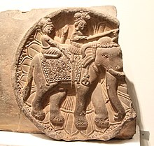

Thank you for visiting our webpage! Please visit again!

Sculpture continues to be a favored medium for artistic expression in India, primarily as a form of religious art. Buildings were profusely adorned, and subject matter largely consisted of abstracted human forms used to illustrate the principles of Hinduism, Buddhism, and Jainism. Female deities such as Shakti, Kali, and Brahma were often depicted in Indian sculpture.
Indian sculpture extends from the Indus Valley, where terracotta figurines were some of the first sculptures to be produced. Throughout the Mauryan Dynasty, which spanned from the 4th to 2nd centuries B.C., large stone pillars appeared at crossroads and important sites. They often had lotus-shaped tops and figures of lions which were symbols of imperial rule. Many large stone images of gods were produced during this period, followed by smaller versions that were placed on Buddhist monuments. Stupas, burial mounds, were surrounded by ornately carved gateways featuring an array of religious symbols. More mature Indian figurative sculpture began appearing in the 2nd and 1st centuries B.C.
Over the succeeding centuries, a wide range of styles and traditions subsequently flourished throughout different areas. One of the most prominent structures is the Elephanta Caves, a collection of cave temples predominately dedicated to the Hindu god Shiva, constructed from the mid-5th to 6th centuries A.D. By the 9th and 10th centuries, Indian sculpture had reached a form that changed relatively little compared to what it is today and was used primarily as part of architectural decoration
In the early 20th century, Indian sculpture adapted to western academic art traditions, and styles were greatly influenced by realist artists who worked on secular subjects at British art schools. There was a significant departure from ancient and traditional forms depicting myths and deities. In the 1940s and 1950s, painter and sculptor Ramkinkar Baij worked to fuse both Western art and traditional Indian forms, experimenting with unconventional materials such as concrete, gravel, and cement. This experimentation lives on in contemporary Indian sculpture, which equally borrows from traditional techniques and subject matter while exploring new approaches.
Soe notable sculptures are the Taj Mahal, Ajanta Caves, Ashoka Pillar, Ihole and Badai, Belur and Halebidu and many more.